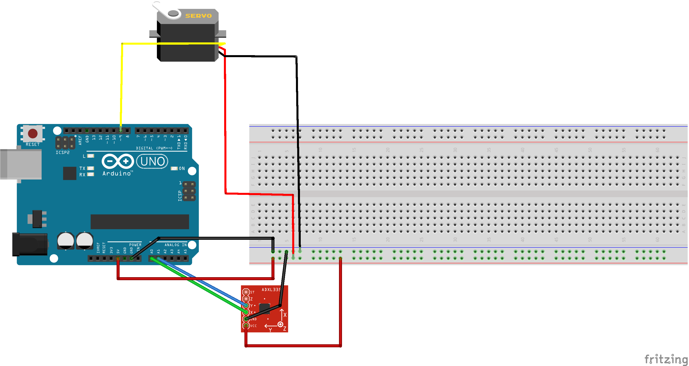
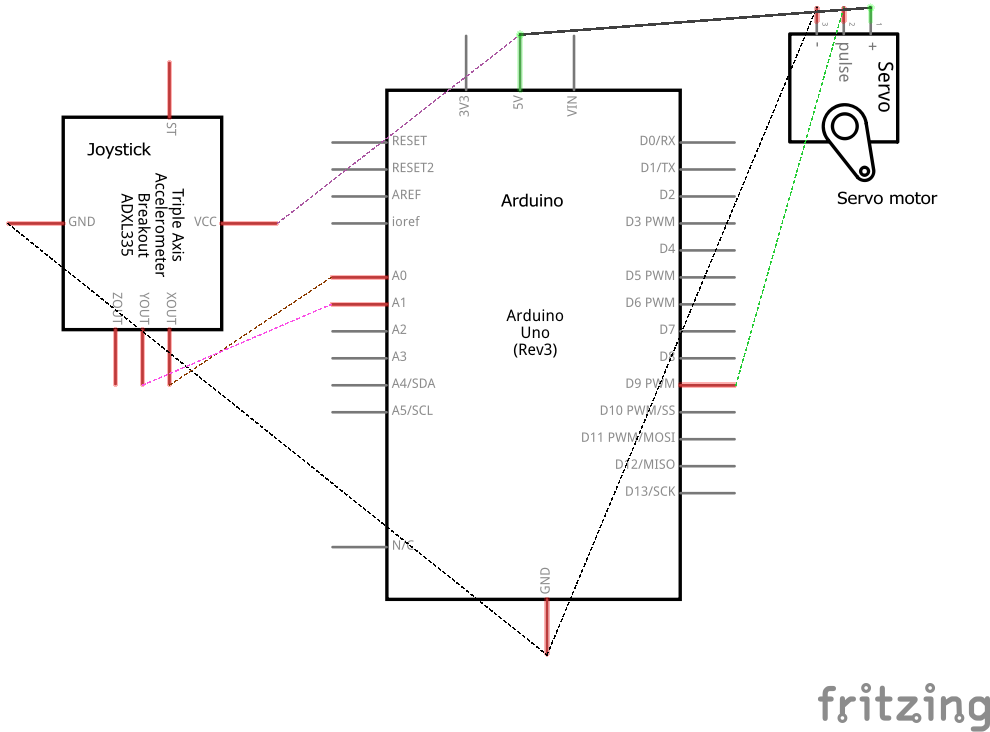

Zach Thomas Assignment 5: Motors!

Here is a short gif of the functionality of my circuit. The joy stick takes in an x and a y measurement. That is converted into an angle which the motor rotates to.  Here is the breadboard diagram for my circuit.  Here is the technical schematic of the circuit. All pieces of this Circuit are low current and voltage which means there is no need for any resistors.
//Zach Thomas
//HCDE 439: Physical Computing
//Winter 2019
//Assignment 5: Motors
#include
#include
Servo myservo; // Initializing a servo object
int pos = 0; // Initializing the position of the motor
double radian = 0; // Initializing the radians measurement
int x = A0; // Initializing the x value input pin
int y = A1; // Initializing the y value input pin
int xval = 0; // Initializing the x value
int yval = 0; // Initializing the y value
void setup() {
Serial.begin(9600); // Begin the Serial measurment
myservo.attach(9); // Attach the servo to pin 9
}
void loop() {
xval = (double) analogRead(x) - 500; // Read in the x position and adjust it to be centered at zero
yval = (double) analogRead(y) - 500; // Read in the y position and adjust it to be centered at zero
radian = atan2(yval, xval); // Get the radian value by finding the Arc Tan of the x and y values
if(radian > 0) { // check if the radian value is greater than zero
pos = radian / 3.14159 * 360; // If so then compute degrees
} else if (radian < 0) { // Check if the radian value is less tha zero
pos = -radian / 3.14159 * 360; // If so then compute negative degrees
} else {
pos = 0; // Otherwise set the degrees to zero
}
myservo.write(pos); // Write the position to the motor
//Print the values:
Serial.print("x = ");
Serial.print(xval);
Serial.print(" | y = ");
Serial.print(yval);
Serial.print(" | pos = ");
Serial.println(pos);
Serial.println();
delay(50);
}